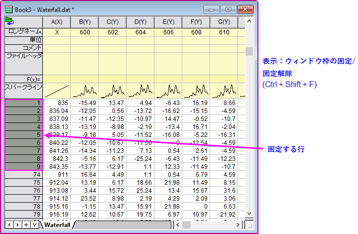
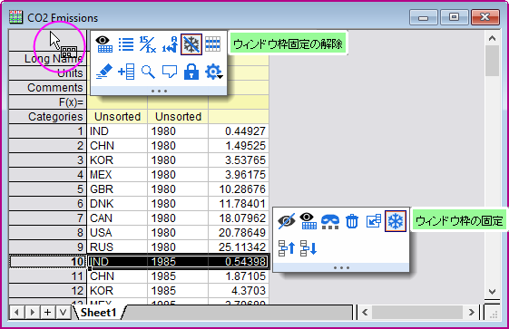

行・列の固定
freeze-rows-columns
ワークシートの最初の1～10行および/または列を固定して、残りの行または列をスクロールすることができます。固定された行および列はヘッダは、固定されていることを示すために位色で表示されます。
- 
- 行または列、あるいは行/列番号 = 1～10にある単一のセルを選択して、以下のいずれかの操作をします。
- 表示：ウィンドウ枠の固定/固定解除を選択。
- Ctrl + Shift + Fを押す。
- 行/列または単一のセルを選択し、ミニ ツールバー ボタンウィンドウ枠の固定をクリック。
- 行または列のフリーズを解除するには、シートの左上端のセルをクリックし、ウィンドウ枠固定の解除ボタンをクリックします。または、表示：ウィンドウ枠の固定/固定解除を選択します。
- 